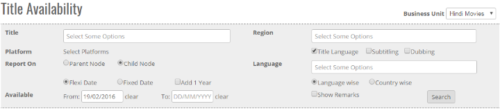


	<section>
		<article>
			<h2>Title Availability Report<span></span></h2>
			<div>
				<p></p>

				<p>This report focuses on the availability of Title for all regions except Indian Theatrical Territory. Report is accessible to the user who has rights for this particular report.</p>

				<p><b>Business Unit</b> - If there are multiple business units, then as per selection of Business unit, respective data will be generated.</p>

				<div class="triangle-border top">				
					
				</div>

				<p><b>Title</b> - Availability results is based on Title selection. It is a mandatory field.</p>

				<p><b>Region</b> - This option is an additional refinement of search criteria using Country or Territory Group. If this option is not selected than report will be generated for all available regions.</p>

				<p><b>Flexi Date</b> - Date is another filter provided to generate Availability Report as per user selection. Available from and To are used in Date search. Searching with flexi date means availability data will be populated in report even though there is 1 day of Availability of Title. By default Available from date is selected as current date. 
				<p>- Selection Add 1 Year will add 1 year in From date. It is used in case of Flexi Date.</p>

				<p><b>Fixed Date</b> - If Fixed Date is selected, it will populate data for title if it is available from provided start and end date. That means whole period has to be available for selected Title. It is mandatory to enter End date. Add 1 year option is not available for Fixed Date.</p>

				<p><b>Platforms</b> - This option is available to the user to generate a report for the selected platforms only. If this option is not selected than report will be generated for all available platforms.</p>

				<p><b>Report On</b> - User has the option to generate report on parent node or child node. By default, Child Node is selected. If parent node is selected than report will be generated on parent platform provided all the platforms under parent platform are available. If child node is selected then report will be generated on child platform even if all the platforms are available.</p>

				<p><b>Language wise and Country wise</b> - User has the option to generate report either Language wise or Country wise. By default, Language wise is selected. If language wise is selected than records in report will be generated based on individual languages and for region the data will be grouped as comma separated or a territory if all the available countries match a territory group. Similarly, report is generated for Country wise too.</p>

				<p><b>Title or Subtitling or Dubbing</b> - User can select one or all the options to generate data for the selected option. Selecting at least one option is mandatory.</p>

				<p><b>Language</b> - This option is an additional refinement of search criteria using Language or Language Group. This option will only work when Subtitling or Dubbing option is selected. If this option is not selected than report will be generated for all available languages.</p>

				<p><b>Show Remarks</b> - This option is by default not selected. If user wants to see Deal remarks along with Title's Availability then the user should select the option and perform search. Report will be generated with Deal General, Rights, and Restriction Remarks etc.</p>
				
			</div>
		</article>
	</section>